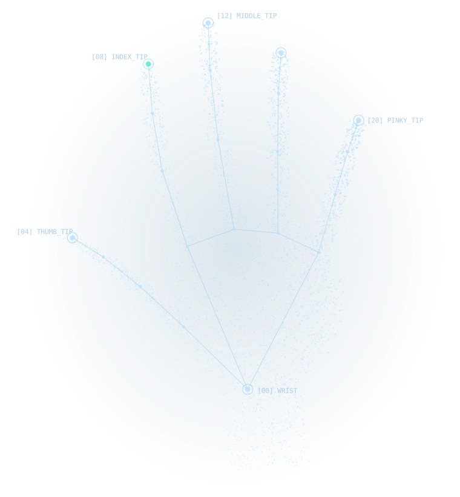
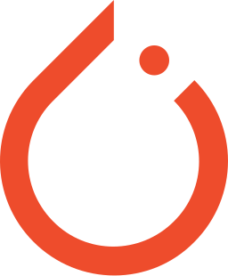
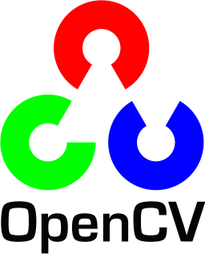

Machine learning & computer vision
Mình là Minh Vũ.
AI từ mô hình đến thực tế.
Mình xây dựng hệ thống có thể nhìn, nhận biết và giải quyết vấn đề. Từ nhận diện ký hiệu đến thị giác máy tính và dự đoán dữ liệu.
Sinh viên CNTT tại Đại học Phenikaa

Nhận diện bắt đầu từ những điểm nhỏ.
Selected work
Những hệ thống mình xây.
Computer vision, mô hình dự đoán và ứng dụng AI. Mỗi dự án là một bài toán cụ thể.
Behind the work
Tò mò về AI. Quan tâm đến cách nó hoạt động.
Mình là Từ Hữu Minh Vũ, sinh viên Công nghệ thông tin tại Đại học Phenikaa. Mình thích đưa mô hình ra khỏi notebook và kết nối nó với một ứng dụng có thể dùng được.
Những bài toán mình theo đuổi trải dài từ nhận diện cử chỉ, phát hiện vi phạm giao thông đến phân tích rủi ro khách hàng. Mình làm việc ở cả phần mô hình, xử lý dữ liệu và backend.
Đang tìm hiểu
AI agents, computer vision và các hệ thống AI hoàn chỉnh.
Bộ công cụ của mình

PyTorch
OpenCV